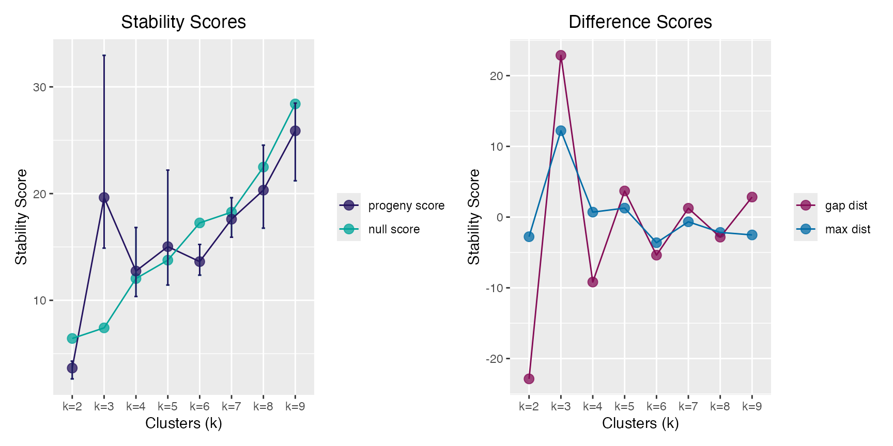
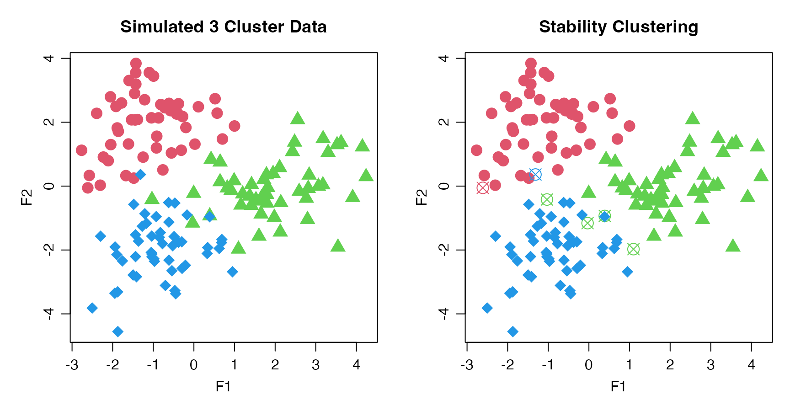

Progeny and Stability Clustering
progeny-clustering.RmdUseful functions:
-
progeny_cluster(): performs progeny clustering -
plot()andprint(): S3 methods for classpclust -
stability_cluster(): performs stability clustering
Progeny Clustering via progeny_cluster()
Select the optimal number for clustering using Progeny Clustering.
The “true” number of clusters in the progeny_data object is
3.
pc <- progeny_cluster(progeny_data, clust_iter = 2:9L,
reps = 10L, iter = 25L, size = 6)
pc
#> ══ Progeny Cluster Object ═════════════════════════════════════════════
#> Call progeny_cluster(data = progeny_data, clust_iter = 2:9L, reps = 10L, iter = 25L, size = 6)
#> Progeny Size 6
#> No. of Iterations 25
#> K Iterations 2 3 4 5 6 7 8 9
#> ── Mean & CI95 Stability Scores ───────────────────────────────────────
#> k=2 k=3 k=4 k=5 k=6 k=7 k=8 k=9*
#> 2.5% 2.64 14.9 10.4 11.4 12.4 15.9 16.8 21.2
#> 3.65 19.6 12.7 15.0 13.6 17.6 20.3 25.9
#> 97.5% 4.31 33.0 16.8 22.2 15.2 19.6 24.5 28.5
#> ── Maximum Distance Scores ────────────────────────────────────────────
#> k=2 k=3* k=4 k=5 k=6 k=7 k=8 k=9
#> -2.774 12.215 0.702 1.270 -3.624 -0.661 -2.162 -2.522
#> ── Gap Distance Scores ────────────────────────────────────────────────
#> k=2 k=3* k=4 k=5 k=6 k=7 k=8 k=9
#> -22.87 22.87 -9.18 3.70 -5.38 1.25 -2.83 2.83
#> ═══════════════════════════════════════════════════════════════════════
plot(pc)
Stability Clustering via stability_cluster()
Partitioning Around Medoids (PAM) is used both because is uses a more
robust measurement of the cluster centers (medoids) and because this
implementation keeps the cluster labels consistent across runs, a key
feature in calculating the across run stability. This does not occur
using stats::kmeans() where the initial cluster labels are
arbitrarily assigned.
Correct clusters are:
- cluster 1 -> samples 1:50
- cluster 2 -> samples 51:100
- cluster 3 -> samples 101:150
stab_clust <- withr::with_seed(999,
stability_cluster(progeny_data, k = 3L, iter = 500L)
)
stab_clust
#> # A tibble: 150 × 4
#> `k=1` `k=2` `k=3` ProbK
#> <dbl> <dbl> <dbl> <dbl>
#> 1 0.718 0.156 0.126 1
#> 2 0.684 0.172 0.144 1
#> 3 0.682 0.152 0.166 1
#> 4 0.664 0.19 0.146 1
#> 5 0.642 0.184 0.174 1
#> 6 0.7 0.154 0.146 1
#> 7 0.696 0.13 0.174 1
#> 8 0.644 0.154 0.202 1
#> 9 0.652 0.178 0.17 1
#> 10 0.682 0.154 0.164 1
#> # ℹ 140 more rows
# view 3-way confusion matrix
table(actual = rep(1:3, each = 50L), predicted = stab_clust$ProbK)
#> predicted
#> actual 1 2 3
#> 1 49 1 0
#> 2 0 46 4
#> 3 1 0 49
# identify false clusters
stab_clust <- stab_clust |>
dplyr::mutate(
sample = dplyr::row_number(),
pch = rep(16:18, each = 50),
pch = dplyr::case_when(
sample <= 50 & ProbK != 1L ~ 13L, # cluster 1
sample > 50 & sample <= 100 & ProbK != 2L ~ 13L, # cluster 2
sample > 100 & ProbK != 3L ~ 13L, # cluster 3
TRUE ~ pch
)
)
# view incorrect clusters (n = 6)
stab_clust |> dplyr::filter(pch == 13)
#> # A tibble: 6 × 6
#> `k=1` `k=2` `k=3` ProbK sample pch
#> <dbl> <dbl> <dbl> <dbl> <int> <int>
#> 1 0.37 0.442 0.188 2 43 13
#> 2 0.196 0.376 0.428 3 58 13
#> 3 0.228 0.346 0.426 3 73 13
#> 4 0.174 0.406 0.42 3 84 13
#> 5 0.162 0.388 0.45 3 86 13
#> 6 0.636 0.224 0.14 1 115 13Plotting Clusters
We can plot the progeny_data object, which has 3 main
clusters, and identify which samples that were “correctly” clustered via
stability clustering with an “X”.
par_def <- list(mgp = c(2, 0.75, 0), mar = c(3, 4, 3, 1))
par(par_def)
par(mfrow = 1:2L)
plot(progeny_data, col = rep(2:4, each = 50L),
pch = rep(16:18, each = 50), cex = 1.75, main = "Simulated 3 Cluster Data")
plot(progeny_data, col = rep(2:4, each = 50), pch = stab_clust$pch, cex = 1.75,
main = "Stability Clustering")
References
Hu, C.W., Kornblau, S.M., Slater, J.H. and A.A. Qutub (2015). Progeny Clustering: A Method to Identify Biological Phenotypes. Scientific Reports, 5:12894. http://www.nature.com/articles/srep12894